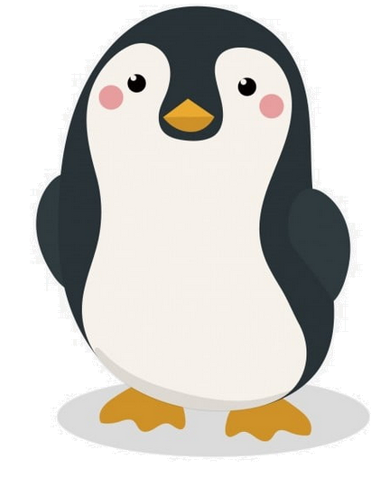

<!DOCTYPE html>
<html>

<head>
    <meta charset="UTF-8">
    <title>Donis的冰磚異想世界..11</title>
    <link rel="stylesheet" type="text/css" href="HexIce-style.css">
</head>

<body></body>
<!-- <body onload="preventZoom()"> -->
<div id="mainleft">
    <div id="dnstitle">
        <h3>Donis的冰磚異想世界..11</h3>
        
    </div>
    <div id="bgmusic">
        <audio id="gameaudio" src="./mp3/openmsc01.mp3" loop></audio>
        <div id="volume-control">
            <input type="range" id="volume-slider" min="0" max="1" step="0.1" value="0.5" orient="vertical">
        </div><!--
            -->
        <div id="play-pause">
            
            <span>按開</span>
        </div>
    </div><!--
        --><button id="btn_Go">開啟新遊戲</button>
</div><!--
    -->
<div id="mainright">
    <audio id="myAudioBar">
        <source src="./mp3/bar-run.mp3" type="audio/mpeg">
    </audio>
    <!-- <h3>Donis的冰磚世界4　　</h3> -->
    <div class="wheel-container">
        
        
        <button id="btn_Sn">＜＜＜＜</button>
        <div id="hownkDiv">請選擇敲冰方式</div>
        <div id="leftIDiv">.....</div>
    </div>
</div>
<div id="canvas_container">
    <div id="image-container">
        
        <audio id="pgmoviesound">
            <source src="./mp3/卡通跑步(show-fast).mp3" type="audio/mpeg">
    </div>
    <canvas id="myCanvas"></canvas>
</div>

<script>
    // --------------------------------------操作音量
    var gameaudio = document.getElementById('gameaudio');
    var playPause = document.getElementById('play-pause');
    var playPauseimg = document.getElementById('play-pause-img');
    var volumeSlider = document.getElementById('volume-slider');
    var btn_Go = document.getElementById('btn_Go');
    var pgmSoundSpeed = 1.1;// 設置播放速度為1.1倍
    btn_Go.addEventListener('click', function () {
        Game_init();
    });
    playPause.addEventListener('click', function () {
        //** console.log(document.activeElement);
        if (gameaudio.paused) {
            gameaudio.play();
            playPauseimg.src = "./fig/ico/sound-on.png";
            playPause.querySelector('span').textContent = '按關';
        } else {
            gameaudio.pause();
            playPauseimg.src = './fig/ico/sound-off.png';
            playPause.querySelector('span').textContent = '按開';
        }
    });

    window.addEventListener("keypress", function (event) {
        if (event.code === "Space") {
            if (gameaudio.paused) {
                gameaudio.play();
                playPauseimg.src = "./fig/ico/sound-on.png";
                playPause.querySelector('span').textContent = '按關';
            } else {
                gameaudio.pause();
                playPauseimg.src = './fig/ico/sound-off.png';
                playPause.querySelector('span').textContent = '按開';
            }
        }
    });
    volumeSlider.addEventListener('input', function () {
        gameaudio.volume = volumeSlider.value;
    });

    gameaudio.play();


    // --------------------------------------操作滾輪

    var beep01 = new Audio('./mp3/beep01.mp3');//警示音
    var fall_yar = new Audio('./mp3/fall_yar.mp3');//驚叫聲

    const btn_Sn = document.getElementById('btn_Sn');
    const image1 = document.getElementById('imagewheel');
    const image2 = document.getElementById('imagewhee2');
    const audioBar = document.getElementById("myAudioBar");
    btn_Sn.addEventListener('mousedown', startRotate);
    btn_Sn.addEventListener('mouseup', stopRotate);
    const nk_div = document.getElementById("hownkDiv");
    const sf_div = document.getElementById("leftIDiv");


    let isRotating = false;
    let startTime, endTime;
    let startAngle, endAngle;
    let realPos = 0;//這是顯示選擇輪盤圖的角度
    let targetIndex = 0;//敲冰指標
    let More_Ice_Cut = 0;//設定還要敲顆冰
    let More_IceA = 0;//設定還要敲幾顆白冰
    let More_IceB = 0;//設定還要敲幾顆藍冰

    //顯示這一輪AB冰塊要敲的數目
    function Showhowcut(IceCut_n) {
        const iA = IceCutArray[IceCut_n][0];
        const iB = IceCutArray[IceCut_n][1];
        More_IceA = iA;//開始這一輪敲擊初始設定
        More_IceB = iB;//開始這一輪敲擊初始設定
        More_Ice_Cut = iA + iB;//開始這一輪敲擊初始設定
        S_output = "";
        if (iA + iB == 0) {
            S_output = "PASS!!太幸運了，換下一個"
        }
        else {
            S_output = "請敲下";
            if (iA > 0) {
                S_output = S_output + iA + "顆白冰塊."
            }
            if (iB > 0) {
                S_output = S_output + iB + "顆藍冰塊"
            }
        }
        return S_output;
    }

    //顯示這一輪AB冰塊要敲的數目
    function leftIcut(iiA, iiB, iiC) {
        S_output = "....";
        if (iiC == 0) {
            nk_div.innerHTML = "請選擇敲冰方式";
        }
        if (iiA > 0 && iiB > 0) {
            S_output = "還要敲" + iiA + "顆白冰塊.&" + iiB + "顆藍冰塊";
        }
        if (iiA > 0 && iiB == 0) {
            S_output = "還要敲" + iiA + "顆白冰塊.";
        }
        if (iiA == 0 && iiB > 0) {
            S_output = "還要敲" + iiB + "顆藍冰塊"
        }
        return S_output;
    }

    function startRotate() {
        if (More_Ice_Cut > 0) {
            beep01.play();
            // 显示警告窗口
            alert('請先完成敲擊任務!!\n' + leftIcut(More_IceA, More_IceB, More_Ice_Cut));
            return;
        }
        image1.style.display = 'block';
        image2.style.display = 'none';
        if (!isRotating) {
            isRotating = true;
            startTime = Date.now();
            startAngle = endAngle || 0;
            imagewheel.classList.add('rotating');
            requestAnimationFrame(rotateImage);
        }
    }

    function stopRotate() {
        image2.style.display = 'block';
        image1.style.display = 'none';
        if (isRotating) {
            isRotating = false;
            endTime = Date.now();
            endAngle = ((endTime - startTime) / 10) % 360;
            imagewheel.style.transform = `rotate(${endAngle}deg)`;
            imagewheel.classList.remove('rotating');
            realPos = (realPos + Math.trunc(Math.random() * 360)) % 360;//選擇輪盤圖既設角度+由亂數產生角度=新顯示角度
            imagewhee2.style.transform = `rotate(${realPos}deg)`;
            targetIndex = Math.ceil(realPos / 45) % 8;//由輪盤圖角度對應到的敲冰指標
            //**console.log("realPos =" + realPos + "targetIndex=" + targetIndex);
            nk_div.innerHTML = Showhowcut(targetIndex);// 顯示敲冰方式
            if (More_Ice_Cut > 0) {
                sf_div.innerHTML = leftIcut(More_IceA, More_IceB, More_Ice_Cut);
            }
            audioBar.pause(); // 暫停音樂
            audioBar.currentTime = 0; // 重置音樂播放進度
        }
    }

    function rotateImage() {
        if (isRotating) {
            const elapsed = Date.now() - startTime;
            let angle = (startAngle + ((elapsed / 10) % 360)) % 360;
            imagewheel.style.transform = `rotate(${angle}deg)`;
            requestAnimationFrame(rotateImage);
            audioBar.play(); // 播放音樂
        }
    }


    //-----------------------------------------------------------CANVAS處理
    const soundkk = new Audio('mp3/ice-kk.mp3');//敲冰聲音
    const soundtt = new Audio('mp3/ice-tt.mp3');//接續敲冰聲音
    const canvas_ctn = document.getElementById("canvas_container");
    const canvas = document.getElementById("myCanvas");
    const ctx = canvas.getContext("2d");

    const hexagonRadius = 50; //設定冰塊邊長大小
    canvas.width = hexagonRadius * 14;//設定canvas區域寬與高
    canvas.height = hexagonRadius * 12;

    let orgcolor = []; //設定原始顏色
    const deltax = hexagonRadius * 1.5; //設定ㄧ單位X變量
    const deltay = hexagonRadius * Math.sin(Math.PI / 3); //設定ㄧ單位Y變量
    const orgX0 = hexagonRadius;//起始冰塊中心位置X
    const orgY0 = 7 * deltay;//起始冰塊中心位置Y
    //下面是每個冰塊中心頂點距離起始冰塊中心位置之x,y偏移量
    const keyPointAry = [[0, 0], [1, -3], [1, -1], [1, 1], [1, 3], [2, -4], [2, -2], [2, 0], [2, 2], [2, 4], [3, -5], [3, -3], [3, -1], [3, 1], [3, 3], [3, 5], [4, -4], [4, -2], [4, 0], [4, 2], [4, 4], [5, -5], [5, -3], [5, -1], [5, 1], [5, 3], [5, 5], [6, -4], [6, -2], [6, 0], [6, 2], [6, 4], [7, -3], [7, -1], [7, 1], [7, 3], [8, 0]];
    //下面是強固的冰磚組合(冰塊編號是從1開始)
    const fixarray = [[1], [2, 3, 4, 5], [6, 7, 8, 9, 10], [11, 12, 13, 14, 15, 16], [17, 18, 19, 20, 21], [22, 23, 24, 25, 26, 27], [28, 29, 30, 31, 32], [33, 34, 35, 36], [37], [5, 10, 16], [1, 4, 9, 15, 21, 27], [3, 8, 14, 20, 26, 32], [2, 7, 13, 19, 25, 31, 36], [6, 12, 18, 24, 30, 35], [11, 17, 23, 29, 34, 37], [22, 28, 33], [2, 6, 11], [1, 3, 7, 12, 17, 22], [4, 8, 13, 18, 23, 28], [5, 9, 14, 19, 24, 29, 33], [10, 15, 20, 25, 30, 34], [16, 21, 26, 31, 35, 37], [27, 32, 36]];
    //下面是每個冰塊↓↘↗三方向隸屬的強固冰磚組(冰磚組編號是從1開始)
    const icebelongary = [[1, 11, 18], [2, 13, 17], [2, 12, 18], [2, 11, 19], [2, 10, 20], [3, 14, 17], [3, 13, 18], [3, 12, 19], [3, 11, 20], [3, 10, 21], [4, 15, 17], [4, 14, 18], [4, 13, 19], [4, 12, 20], [4, 11, 21], [4, 10, 22], [5, 15, 18], [5, 14, 19], [5, 13, 20], [5, 12, 21], [5, 11, 22], [6, 16, 18], [6, 15, 19], [6, 14, 20], [6, 13, 21], [6, 12, 22], [6, 11, 23], [7, 16, 19], [7, 15, 20], [7, 14, 21], [7, 13, 22], [7, 12, 23], [8, 16, 20], [8, 15, 21], [8, 14, 22], [8, 13, 23], [9, 15, 22]];
    //下面是每個冰塊相接的六個冰塊編號(冰塊編號是從1開始，0表示岸邊)
    const icearoundary = [[0, 0, 3, 4, 0, 0], [0, 0, 6, 7, 3, 0], [0, 2, 7, 8, 4, 1], [1, 3, 8, 9, 5, 0], [0, 4, 9, 10, 0, 0], [0, 0, 11, 12, 7, 2], [2, 6, 12, 13, 8, 3], [3, 7, 13, 14, 9, 4], [4, 8, 14, 15, 10, 5], [5, 9, 15, 16, 0, 0], [0, 0, 17, 12, 6, 0], [6, 11, 17, 18, 13, 7], [7, 12, 18, 19, 14, 8], [8, 13, 19, 20, 15, 9], [9, 14, 20, 21, 16, 10], [10, 15, 21, 0, 0, 0], [11, 0, 22, 23, 18, 12], [12, 17, 23, 24, 19, 13], [13, 18, 24, 25, 20, 14], [14, 19, 25, 26, 21, 15], [15, 20, 26, 27, 0, 16], [0, 0, 0, 28, 23, 17], [17, 22, 28, 29, 24, 18], [18, 23, 29, 30, 13, 19], [19, 24, 30, 31, 26, 20], [20, 25, 31, 32, 27, 21], [21, 26, 32, 0, 0, 0], [22, 0, 0, 33, 29, 23], [23, 28, 33, 34, 30, 24], [24, 29, 34, 35, 31, 25], [25, 30, 35, 36, 32, 26], [26, 31, 36, 0, 0, 27], [28, 0, 0, 0, 29, 34], [29, 33, 0, 37, 35, 30], [30, 34, 37, 0, 36, 31], [31, 35, 0, 0, 0, 32], [34, 0, 0, 0, 0, 35]];
    const IceCutArray = [[0, 0], [1, 0], [1, 2], [0, 2], [2, 1], [0, 1], [2, 0], [1, 1]]  //定義敲冰數指標[白A,藍B]
    const colorA = "white";//設定A類冰塊顏色
    const colorB = "aqua";//設定B類冰塊顏色
    const colorC = "black"//設定敲掉顏色
    const rect = canvas.getBoundingClientRect();
    //** console.log('canvas左上角座標為(' + rect.left + ',' + rect.top + ')')


    const hexagons = [];//各冰塊基本資料(中心點x,中心點y,邊長,顏色,是否敲掉,超連結...)
    const hexinplace = [];//冰塊是否在圖面上 1:yes 0:no
    const hexcheckfix = [];//冰塊是否已經確定固定 1:yes 0:尚待確認
    iceA = 0;//A類冰塊有幾顆;
    iceB = 0;//B類冰塊有幾顆
    let iceAMax = Math.trunc(keyPointAry.length / 2) + (keyPointAry.length % 2) * Math.round(Math.random());//計算初始AB類冰塊樹目(隨機決定當冰塊總數為單數時，A多還是B多)
    //**console.log("keyPointAry.length=" + keyPointAry.length + "iceAMax =" + iceAMax)
    for (let i = 0; i < keyPointAry.length; i++) {
        hexinplace[i] = 1;
        hexcheckfix[i] = 0;
        const icxn = Math.round(Math.random()) * 2 - 1;
        if (icxn == 1 && iceA <= iceAMax) {
            iceA = iceA + 1;
            orgcolor[i] = colorA;
            hexagons[i] = [orgX0 + keyPointAry[i][0] * deltax, orgY0 + keyPointAry[i][1] * deltay, hexagonRadius, colorA, false, 'https://www.google.com'];
        }
        else {
            iceB = iceB + 1;
            orgcolor[i] = colorB;
            hexagons[i] = [orgX0 + keyPointAry[i][0] * deltax, orgY0 + keyPointAry[i][1] * deltay, hexagonRadius, colorB, false, 'https://www.twitter.com']
        }
    }

    let whichIce = Math.floor(Math.random() * hexagons.length);
    let randomHexagon = hexagons[whichIce];//設定企鵝站上哪個冰塊
    const imageContainer = document.getElementById("image-container");
    const imageoutContainer = document.getElementById("image-out-container");
    const targetImg = document.getElementById('target-img');
    const okImageSrc = './fig/pg00.png';//企鵝安全圖
    const xkImageSrc = './fig/pengun02.gif';//企鵝GG圖

    imageContainer.style.left = (randomHexagon[0] - hexagonRadius / 2) + "px"; // 将企鵝圖所在位置 left 和 top 属性设置为六边形的位置
    imageContainer.style.top = (randomHexagon[1] - hexagonRadius / 2) + "px";
    document.documentElement.style.setProperty('--hex-size', hexagonRadius + 'px');
    document.documentElement.style.setProperty('--cvs-top', rect.top + 'px');//canvas畫布的top
    document.documentElement.style.setProperty('--cvs-left', rect.left + 'px');//canvas畫布的left
    document.documentElement.style.setProperty('--pgm-xx', (randomHexagon[0] - hexagonRadius / 2) + 'px');//企鵝在canvas內的X
    document.documentElement.style.setProperty('--pgm-yy', (randomHexagon[1] - hexagonRadius / 2) + 'px');//企鵝在canvas內的Y
    imageContainer.addEventListener('animationstart', function () {
        pgmoviesound.playbackRate = pgmSoundSpeed;
        pgmoviesound.play();
    });
    imageContainer.addEventListener('animationend', function () {
        pgmoviesound.pause();
        pgmoviesound.currentTime = 0;
    });
    //** console.log("whichIce=" + whichIce + "..." + randomHexagon);
    // ----------------------------------------------------------初次繪製-------------------------------------------//
    draw();
    // ----------------------------------------------------------初次繪製-------------------------------------------//

    // 繪製六邊形
    function drawHexagon(x, y, size, icolor) {
        ctx.beginPath();
        ctx.moveTo(x + size * Math.cos(0), y + size * Math.sin(0));
        for (let i = 1; i <= 6; i++) {
            ctx.lineTo(x + size * Math.cos(i * 2 * Math.PI / 6), y + size * Math.sin(i * 2 * Math.PI / 6));
        }
        ctx.fillStyle = icolor;
        ctx.fill();
        ctx.closePath();
        ctx.shadowOffsetX = 1;
        ctx.shadowOffsetY = 1;
        ctx.shadowBlur = 1;
        ctx.shadowColor = 'rgba(0, 0, 0, 0.5)';
    }

    // 繪製所有六邊形
    function draw() {
        for (let i = 0; i < hexagons.length; i++) {
            drawHexagon(...hexagons[i]);
        }
        if (hexinplace[whichIce] == 0) {
            gameaudio.pause();
            imageContainer.style.width = 2 * hexagonRadius + 'px';
            imageContainer.style.height = 2 * hexagonRadius + 'px';
            targetImg.src = xkImageSrc;
            imageContainer.style.transition = 'width 1s ease, height 1s ease';

            fall_yar.play();
        }
    }

    // 綁定滑鼠事件mousemove
    canvas.addEventListener("mousemove", function (e) {
        const rect = canvas.getBoundingClientRect();
        const x = e.clientX - rect.left;
        const y = e.clientY - rect.top;
        let hovered = false;
        for (let i = 0; i < hexagons.length; i++) {
            //const [hx, hy, size, color] = hexagons[i];
            hx = hexagons[i][0];
            hy = hexagons[i][1];
            size = hexagons[i][2];
            color = hexagons[i][3];
            // hx=hx+hexagonRadius;
            const distance = Math.sqrt((x - hx) ** 2 + (y - hy) ** 2);
            //console.log("i=" + i + "(" + e.clientX + "," + e.clientY + ")" + " x:" + x + "  y:" + parseInt(y) + "  hx:" + hx + "  hy:" + parseInt(hy) + "  size:" + size + "  dist:" + distance)
            if (distance <= size && hexagons[i][4] == false) {
                canvas.style.cursor = 'url(./fig/hammer-up.png) 5 5, auto';
                //canvas.style.cursor = "pointer";
                hexagons[i][3] = "orange";
                hovered = true;
            } else {
                if (hexagons[i][4] == false) {
                    hexagons[i][3] = orgcolor[i];
                }
            }
        }
        if (!hovered) {
            canvas.style.cursor = "default";
        }
        draw();
    });

    // 綁定滑鼠事件mousedown
    canvas.onmousedown = function (e) {
        //**console.log("DDDD" + "  MA" + More_IceA + "  MB" + More_IceB + "  MC" + More_Ice_Cut);
        //當還有冰塊要敲時才處理
        if (More_Ice_Cut > 0) {
            // 迭代所有六邊形，檢查滑鼠事件是否在六邊形範圍內
            for (let i = 0; i < hexagons.length; i++) {
                if (isMouseInHexagon(e.clientX, e.clientY, hexagons[i]) && hexagons[i][4] == false) {
                    //**console.log("orgcolor[" + i + "]=" + orgcolor[i] + "      colorA=" + colorA + "     colorB=" + colorB);
                    if (orgcolor[i] == colorA && More_IceA > 0) {
                        canvas.style.cursor = 'url(./fig/hammer.png) 5 5, auto';
                        hexinplace[i] = 0;
                        hexagons[i][4] = true;
                        hexagons[i][3] = colorC; // 將該六邊形的顏色設為黑色
                        soundkk.play();//敲冰聲
                        More_IceA = More_IceA - 1;
                        More_Ice_Cut = More_Ice_Cut - 1;
                    }
                    if (orgcolor[i] == colorB && More_IceB > 0) {
                        canvas.style.cursor = 'url(./fig/hammer.png) 5 5, auto';
                        hexinplace[i] = 0;
                        hexagons[i][4] = true;
                        hexagons[i][3] = colorC; // 將該六邊形的顏色設為黑色
                        soundkk.play();//敲冰聲
                        More_IceB = More_IceB - 1;
                        More_Ice_Cut = More_Ice_Cut - 1;
                    }
                }
                else {
                    if (hexagons[i][4] == false) { hexagons[i][3] = orgcolor[i]; } // 將其他六邊形的顏色設回橘色
                }
            }
            sf_div.innerHTML = leftIcut(More_IceA, More_IceB, More_Ice_Cut);
            chkstable();
            draw();
            setTimeout(chkPGsafe, 500);//延時確保企鵝掉落動畫在警告視窗之前
        }
    };

    function isMouseInHexagon(mouseX, mouseY, hexagon) {
        const rect = canvas.getBoundingClientRect(); // 取得 canvas 的相對位置
        const x = mouseX - rect.left; // 計算滑鼠事件的 x 座標
        const y = mouseY - rect.top; // 計算滑鼠事件的 y 座標

        // 計算滑鼠事件和六邊形中心點的距離
        const distance = Math.sqrt((x - hexagon[0]) ** 2 + (y - hexagon[1]) ** 2);
        //** console.log(x + "," + y + "差" + distance + "**" + hexagonRadius);
        // 判斷滑鼠事件是否在六邊形範圍內
        return distance <= hexagon[2];
    }


    function isIcdInFix(icedex) {
        const chx = icebelongary[icedex];//冰塊所屬三方向固定牆組編號陣列
        for (let i = 0; i < chx.length; i++) {
            wallkey = chx[i] - 1;//第幾組固定牆編號
            chkey = fixarray[wallkey];//固定牆組合冰塊成員陣列
            idxok = 1;//先假設固定指標=1
            for (let j = 0; j < chkey.length && idxok == 1; j++) {
                idxok = idxok * hexinplace[chkey[j] - 1];//如果其中一個成員消失了，相乘之後idxok=0表示該方向不牢靠
             }
            if (idxok == 1) {
                //如果該牆面所有成員都存在相乘後idxok仍然=1，表示該冰塊是安全固定的，可將其hexcheckfix指標設定為1
                hexcheckfix[icedex] = 1;
                break;
            }
        }
    }

    // 判斷企鵝是否安全
    function chkPGsafe() {
        if (hexinplace[whichIce] == 0) {
            alert("喔喔喔!遊戲結束~~\n按下確定重啟遊戲");
            Game_init();
        }
    }

    //處理冰塊敲下後連鎖效應至穩定狀態
    function chkstable() {
        do {
            stableidx = 1;
            for (let i = 0; i < keyPointAry.length; i++) {
                if (hexinplace[i] == 1 && chkfix(i) == 0) {
                    hexinplace[i] = 0;
                    stableidx = 0;
                    hexagons[i][4] = true;
                    hexagons[i][3] = colorC;
                    soundtt.play();//接續敲冰聲
                    break;
                }
            }
        }
        while (stableidx == 0);
    }

    //檢查冰塊ice_n是否有足夠接合邊(4邊)或三方向固定
    function chkfix(ice_n) {
        //先檢查所屬三方向是否有固定組合如果有就可以確定固定退出
        let fixax = [];
        let threeway = icebelongary[ice_n];
        for (let k = 0; k < 3; k++) {
            ik = threeway[k] - 1;
            fixax = fixarray[ik];
            let wayok = 1;
            for (m = 0; m < fixax.length; m++) {
                wayok = wayok * hexinplace[(fixax[m] - 1)];
            }
            if (wayok == 1) {
                return 1;
            }
        }
        //再檢查是否有足夠接合邊(4邊)
        icebound = icearoundary[ice_n];
        joinnum = 0;
        for (let j = 0; j < 6; j++) {
            kkk = icebound[j] - 1;
            if (kkk < 0) {
                joinnum++;
            }
            else {
                joinnum = joinnum + hexinplace[kkk];
            }
        }
        //** console.log("ice_n:" + ice_n + "   joinnum=" + joinnum);//顯示冰塊接合邊數目
        if (joinnum >= 4) {
            return 1;
        }
        else { return 0; }
    }


//---遊戲重設各項初始設定-------------------------------------------------------//
    function Game_init() {
        //*********先處理背景音效顯示方式問題
        if (gameaudio.paused) {
            playPauseimg.src = './fig/ico/sound-off.png';
            playPause.querySelector('span').textContent = '按開';
        } else {
            playPauseimg.src = "./fig/ico/sound-on.png";
            playPause.querySelector('span').textContent = '按關';
        }
        targetImg.src = okImageSrc;
        let targetIndex = 0;//敲冰指標
        More_Ice_Cut = 0;//設定還要敲顆冰
        More_IceA = 0;//設定還要敲幾顆白冰
        More_IceB = 0;//設定還要敲幾顆藍冰
        nk_div.innerHTML = "請選擇敲冰方式";
        sf_div.innerHTML = "...";
        iceA = 0;//A類冰塊有幾顆;
        iceB = 0;//B類冰塊有幾顆
        iceAMax = Math.trunc(keyPointAry.length / 2) + (keyPointAry.length % 2) * Math.round(Math.random());//計算初始AB類冰塊樹目(隨機決定當冰塊總數為單數時，A多還是B多)
        for (let i = 0; i < keyPointAry.length; i++) {
            hexinplace[i] = 1;
            hexcheckfix[i] = 0;
            const icxn = Math.round(Math.random()) * 2 - 1;
            if (icxn == 1 && iceA <= iceAMax) {
                iceA = iceA + 1;
                orgcolor[i] = colorA;
                hexagons[i] = [orgX0 + keyPointAry[i][0] * deltax, orgY0 + keyPointAry[i][1] * deltay, hexagonRadius, colorA, false, 'https://www.google.com'];
            }
            else {
                iceB = iceB + 1;
                orgcolor[i] = colorB;
                hexagons[i] = [orgX0 + keyPointAry[i][0] * deltax, orgY0 + keyPointAry[i][1] * deltay, hexagonRadius, colorB, false, 'https://www.twitter.com']
            }
        }

        whichIce = Math.floor(Math.random() * hexagons.length);
        randomHexagon = hexagons[whichIce];//設定企鵝站上哪個冰塊

        document.documentElement.style.setProperty('--hex-size', hexagonRadius + 'px');

        document.documentElement.style.setProperty('--pgm-xx', (randomHexagon[0] - hexagonRadius / 2) + 'px');//企鵝在canvas內的X
        document.documentElement.style.setProperty('--pgm-yy', (randomHexagon[1] - hexagonRadius / 2) + 'px');//企鵝在canvas內的Y

        pgmoviesound.playbackRate = pgmSoundSpeed;
        pgmoviesound.play();
        pgmoviesound.currentTime = 0;

        const x_x = randomHexagon[0] - hexagonRadius / 2;//企鵝在canvas內的X
        const y_y = randomHexagon[1] - hexagonRadius / 2;//企鵝在canvas內的Y
        imageContainer.setAttribute('style', 'transition-duration: 1s');//將企鵝圖片框設定動畫變化時間為2秒
        imageContainer.style.transform = `translate(${x_x}px, ${y_y}px)`;//將企鵝圖片框移動到新位置

        console.log("whichIce=" + whichIce + "..." + randomHexagon);
        draw();
    }
</script>


</body>
</html>